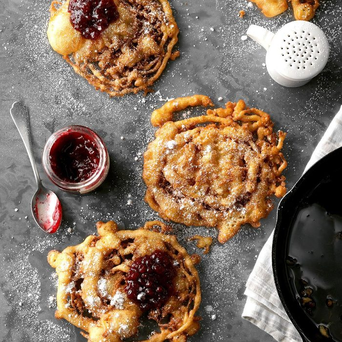

Some Tasty Recipes
Tasty Recipes To Try At Home: We have curated the best of tasty recipes to try at home and relish with family and friends.
1. Funnel Cakes

Funnel cakes are made by pouring batter into hot cooking oil in a circular pattern and deep frying the overlapping mass until golden-brown. The batter is commonly poured through a funnel, creating its texture and giving its name. When made at concession stands, a pitcher with an integral funnel spout is employed. Alton Brown recommends they be made with choux pastry, which expands from steam produced by its high water content.
2. Sandwich
A sandwich is a food typically consisting of vegetables, sliced cheese or meat, placed on or between slices of bread, or more generally any dish wherein bread serves as a container or wrapper for another food type. The sandwich began as a portable finger food in the Western world, though over time it has become prevalent worldwide.